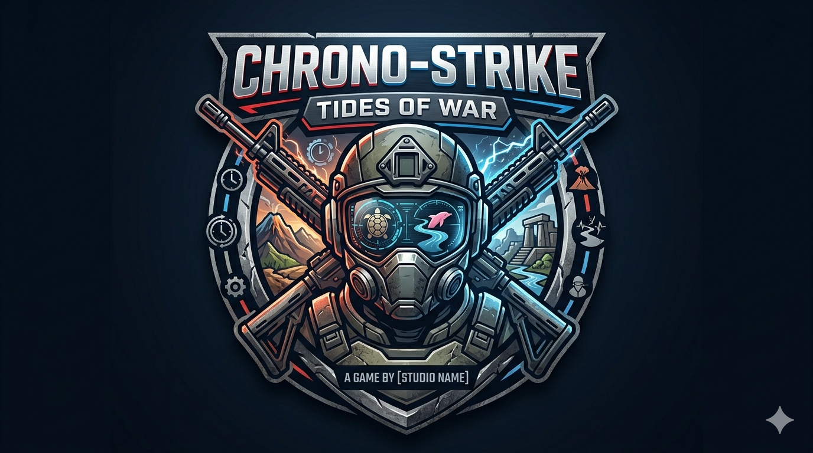

Chrono Strike

Play this fast paced, futuristic FPS shooter today!
Game Info
Rating: 4.5/5
Developer: Chrono Core Studios
Release Date: 2024
Platforms: PC, PlayStation 5, Xbox Series X
Pros
- Fast movement and exciting time-based combat mechanics
- Strong weapon variety and satisfying FPS gameplay loop
Cons
- Can run slowly on some systems during heavy action scenes
- Steeper learning curve for new players in advanced modes
Gameplay Features
- Story missions with time-shift mechanics
- Online multiplayer with ranked and casual playlists
- Weapon loadout customization and unlockable abilities